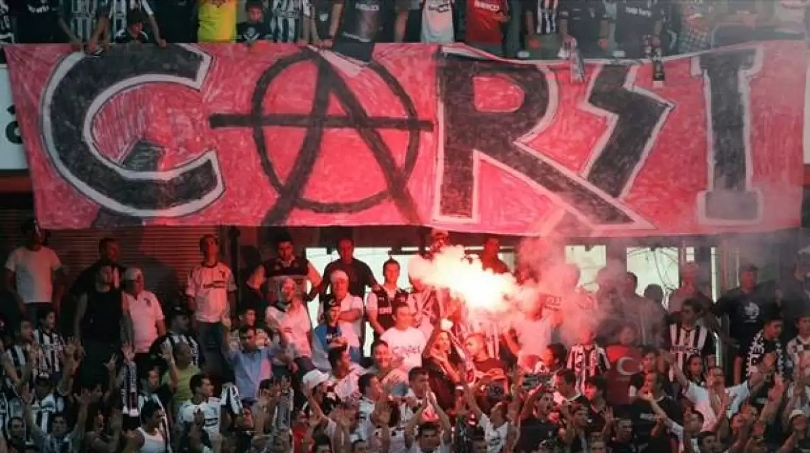

Beşiktaş'ın toplamda 16 Süper Lig (14 Süper Lig + 2 Federasyon Kupası), 10 Türkiye Kupası ve 9 Türkiye Süper Kupası şampiyonluğu bulunmaktadır. (TFF Tahkim Kurulu'nun 09.05.2002 tarih, 2002/52E ve 2002/68K sayılı kararı gereğince, 1956-57 ve 1957-58 sezonlarında Federasyon Kupası'nı kazanan Beşiktaş'ın Süper Lig şampiyonu olduğuna ve bu şampiyonlukların yıldız kriterine dahil edileceğine karar verildi. Bu karar sebebiyle ligde elde edilen şampiyonluk sayısı, Süper Lig sezonu sayısından iki fazladır.). Ayrıca profesyonel lig öncesi ile birlikte 14 kez Süper Lig'de, 2 kez Federasyon Kupası'nda, 2 kez Türkiye Futbol Şampiyonası'nda, 3 kez de Millî Küme'de şampiyon olmak üzere tarihinde toplam 21 Türkiye şampiyonluğu yaşamıştır. Takım ayrıca 1986-87 sezonunda Şampiyon Kulüpler Kupası'nda çeyrek finale çıkarak tarihinin en iyi derecesini elde etti.
Beşiktaş Jimnastik Kulübü'nün faaliyetlerini hızlandırdığı ilk dönemde futbol gölgede kalmışsa da 1910’ların sonundan itibaren kulüpteki atlet ve jimnastikçiler futbola daha fazla ilgi duyup kendi aralarında maçlar yapmaya başladılar. O yıllarda gençliğin ilgisi futbola kaymak üzereydi ve Beşiktaş Kulübü’nün az ilerisinde Valideçeşme ve Basiret gibi iki güçlü futbol takımı kurulmuştu. 1911 Ağustos’unda Valideçeşme futbol takımının başkanı ve kurucusu olan Ahmet Şerafettin Bey (Şeref Bey) futbolcularıyla Beşiktaş Kulübü’ne katıldı. Beşiktaşlı gençlerin kurduğu futbol takımlarını tek bir çatı altında toplamayı amaç edinen Şeref Bey’in girişimleri sonucu, Basiret Kulübü de Beşiktaş’a katıldı. Bu şekilde Futbol Şubesi, resmi olarak Kulüp’te faaliyete başladı. Resul, Rıdvan, Behzat, Doktor Sabri, Şair Kazım, Sadi (Baltalimanı), Doktor Mehmet, Asım, Şeref, Doktor Ali ve Fahri’den oluşan ilk futbol takımının malzemelerinin masraflarını da İpekçi İhsan isimli bir sporsever karşıladı. Birinci takımın yanı sıra ikinci, üçüncü, dördüncü takımlarını da kuran futbol şubesi, Kulübümüz’ün Akaretler’deki bahçesinde futbol idmanlarını hızlandırdı. Böylece futbol Beşiktaş’ta bir anda 1 numaralı spor olmaya başladı. Ancak Balkan Savaşı’nın ardından I. Dünya Savaşı’nın da başlamasıyla Beşiktaş’ın sporcuları cephelere koştu ve spor faaliyetleri yok denecek duruma geldi.
Beşiktaş takımının fanatik grubu Çarşı'dır. Beşiktaş'ın başarılarında taraftarının da büyük bir emeği vardır. Grup 2007'de oynanan Liverpool maçında desibel rekoru kırmıştır. Tribün performanslarıyla Çarşı grubu, dünyanın en ünlü taraftar gruplarının arasındadır. 2013-14 sezonunda Atatürk Olimpiyat Stadyumu'nda oynanan Galatasaray derbisinde 80.000 seyirci ile rekor lig rekoru kırılmıştır. Beşiktaş, taraftarlarının sahaya inmesi sonucu maçın tatil edilmesinin ardından, TFF tarafından hükmen 3-0 mağlup sayılmıştır. Aynı zamanda Türkiye'nin ve dünyanın en iyi taraftar gruplarından birisine sahiptir.
Beşiktaş, 1959 yılından itibaren düzenlenen Süper Lig de 16 Lig (14 Süper Lig + 2 Federasyon Kupası), 10 Türkiye Kupası ve 9 Türkiye Süper Kupası şampiyonluğu bulunmaktadır. Ayrıca profesyonel lig öncesi ile birlikte 14 kez Süper Lig'de, 2 kez Federasyon Kupası'nda, 2 kez Türkiye Futbol Şampiyonası'nda, 3 kez de Millî Küme'de şampiyon olmak üzere tarihinde toplam 21 Türkiye şampiyonluğu yaşamıştır. Takım ayrıca 1986-87 sezonunda Şampiyon Kulüpler Kupası'nda çeyrek finale çıkarak tarihinin en iyi derecesini elde etti.
Türkiye’nin ilk özel spor müzesi
unvanına sahip Beşiktaş Jimnastik Kulübü, Türk Futbolunda önemli ilklere imza atmıştır.
Beşiktaş'a tam kadro olarak Türk millî futbol takımını temsil etme hakkı tanınan tek kulüptür. 16 Mayıs 1952 tarihinde, Federasyonun isteğiyle, Beşiktaş " Türk millî takımını temsilen, Yunanistan millî futbol takımı ile maç yapar. Beşiktaş Futbol Kulübüne, katkılarından dolayı, armasında “Türk Bayrağı” bulundurma ayrıcalığı tanınır. Beşiktaş armasında Türk Bayrağı bulundurma hakkına sahip 3 takımdan biridir.
Beşiktaş İlk Lig Şampiyonluğu 1919-20 sezonunda almıştır.